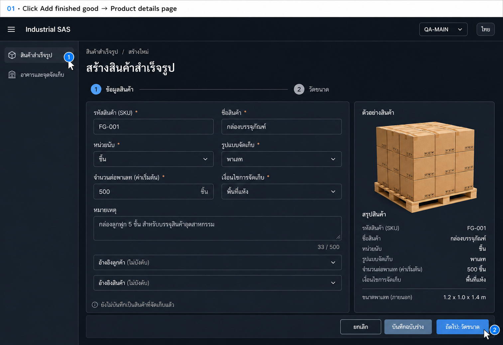
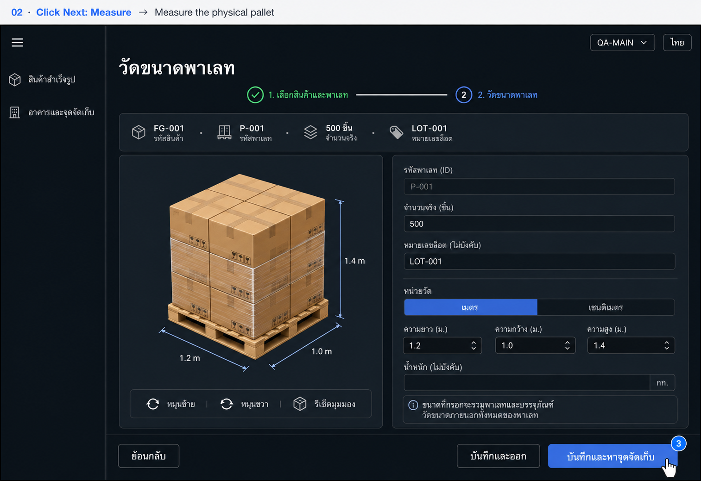
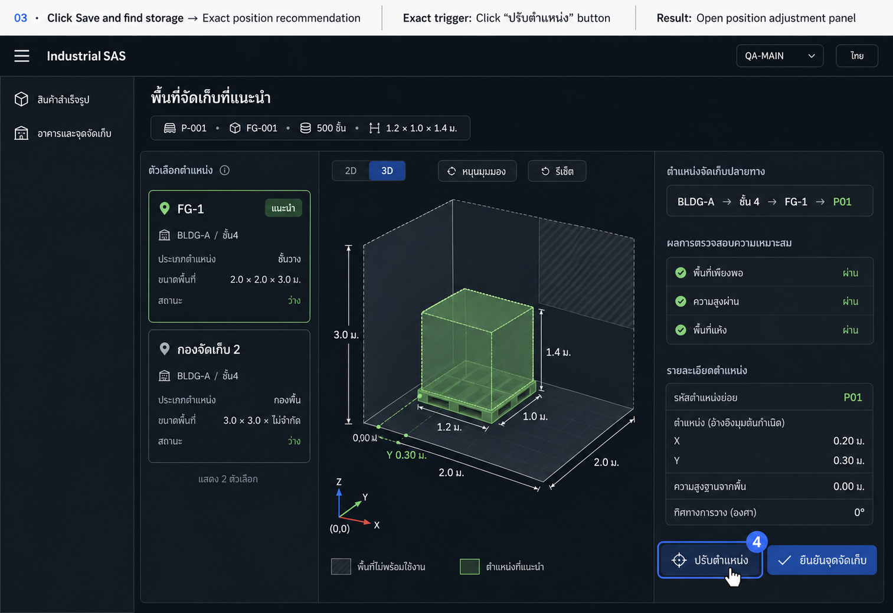
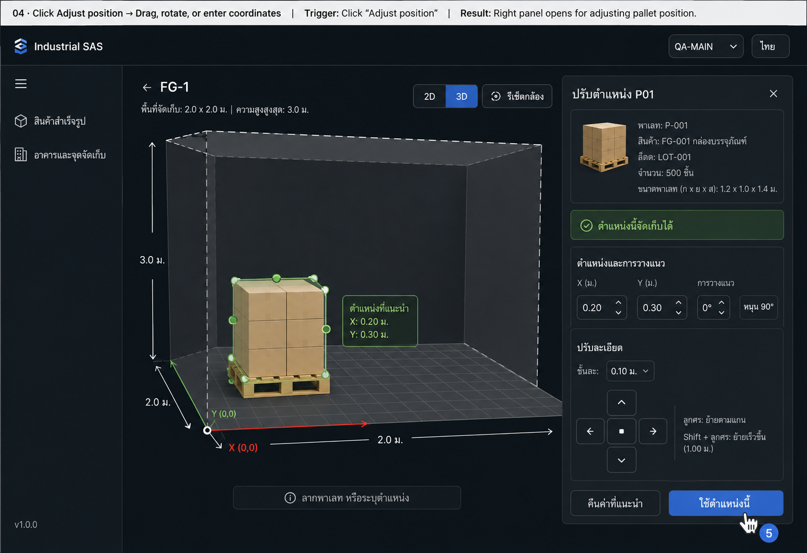
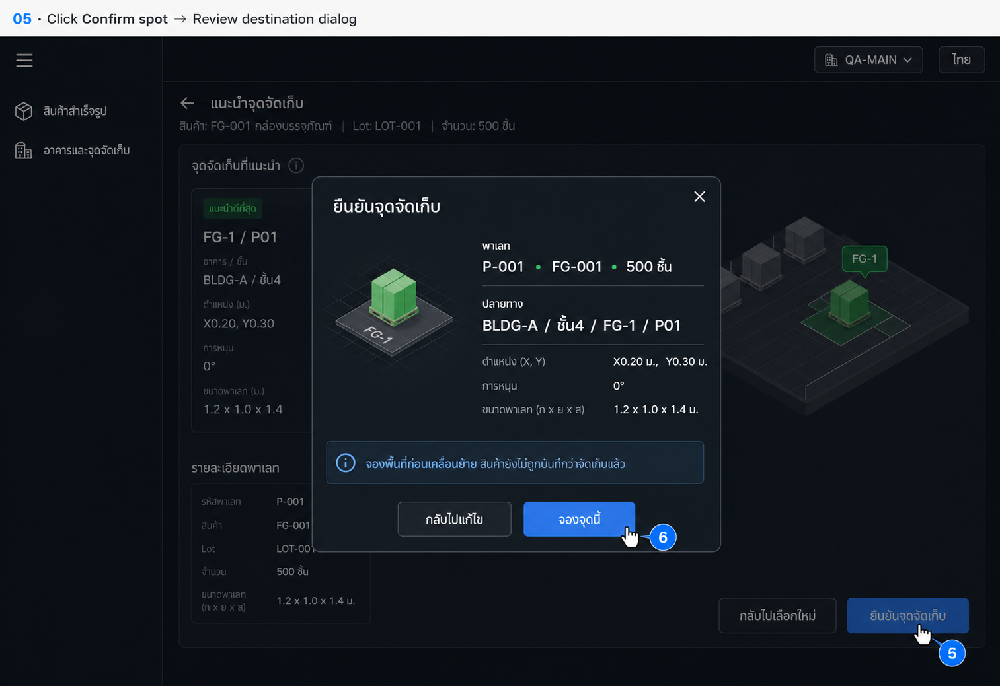
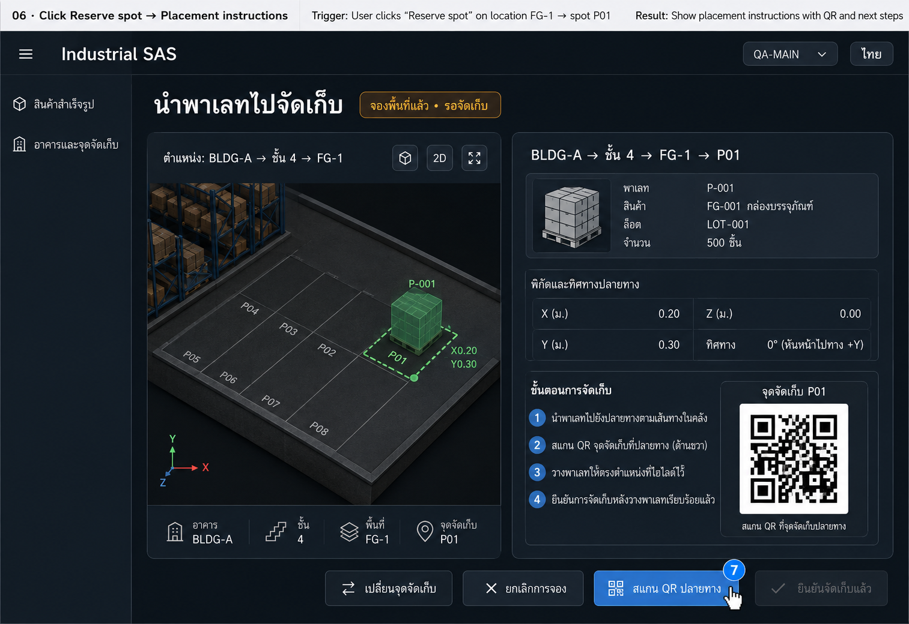
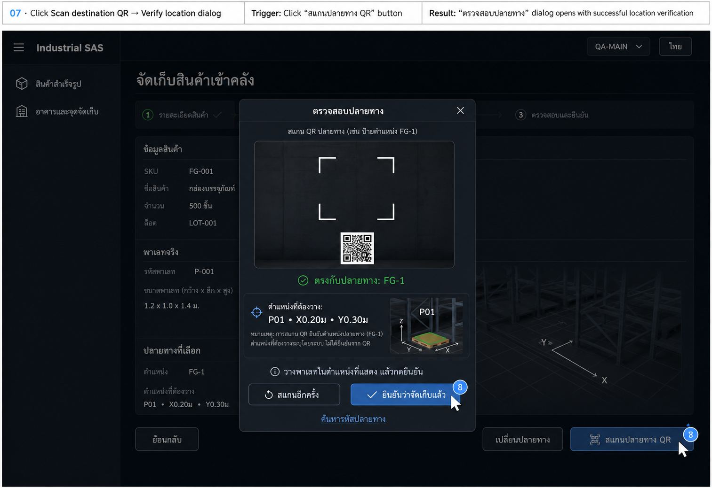
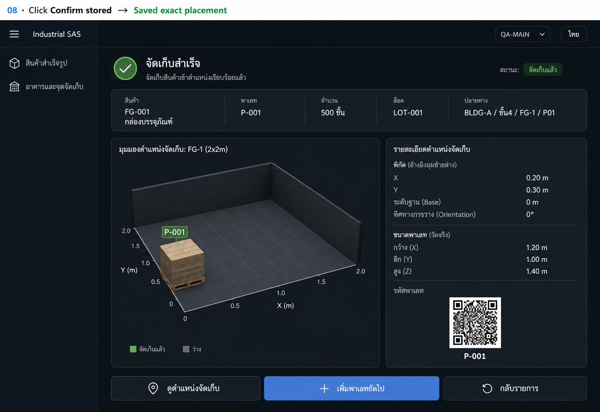

Design history · Generated concepts
Finished goods → measurement → exact storage
Two creation steps, followed by storage selection and physical
confirmation. FG-001 is the product,
P-001 is the pallet, FG-1 is the
location, and P01 is a precise position inside that
location.
Current implemented flow and diagram ·
Original design proposal ·
Image-generation prompts
Click-by-click flow
-
Add finished good → Opens the full product-details
page. This is step 1 of 2.
-
Next: Measure → Opens step 2 for the physical pallet,
actual quantity, and external dimensions.
-
Save and find storage → Shows a precise proposed
position inside a location, with fit checks.
-
Adjust position → Opens an inline panel for dragging,
X/Y coordinates, and 90° pallet rotation.
-
Confirm spot → Opens a destination-review dialog.
Nothing is reserved until Reserve spot is clicked.
-
Reserve spot → Holds the space and shows movement
instructions. The pallet is still awaiting storage.
-
Scan destination QR → Opens a scanner dialog. A
matching code enables physical storage confirmation.
-
Confirm stored → Records the operator-confirmed exact
placement and shows the occupied position.
01Add finished good
Opens the full product-details page. This is step 1 of 2.

02Next: Measure
Opens step 2 for the physical pallet, actual quantity, and external
dimensions.

03Save and find storage
Shows a precise proposed position inside a location, with fit checks.

04Adjust position
Opens an inline panel for dragging, X/Y coordinates, and 90° pallet
rotation.

05Confirm spot
Opens a destination-review dialog. Nothing is reserved until Reserve
spot is clicked.

06Reserve spot
Holds the space and shows movement instructions. The pallet is still
awaiting storage.

07Scan destination QR
Opens a scanner dialog. A matching code enables physical storage
confirmation.

08Confirm stored
Records the operator-confirmed exact placement and shows the occupied
position.
